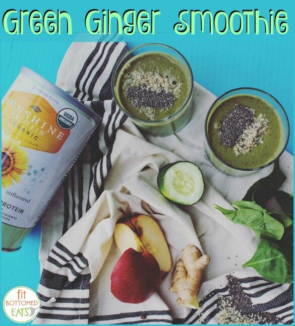

Green Ginger Smoothie (vegan, gluten free)
Hey guys, another guest share this week! I love to bring in other great recipe artists (food is totally an art) with talents in the fields I am not the best in. This week - a green ginger smoothie!! This recipe is packed with so many fresh and flavorful foods. I don't often make smoothies recipes, and that's because I am honestly not creative enough to combine the right stuff; I get scared it'll combine poorly! But this is a sure winner.
This recipe is coming from Kristen over at Fit Bottomed Eats. As the blog name suggests, the site is filled with recipes for fit foodies! Whether you are vegan, vegetarian, gluten-free, or a meat eater, they have a little bit of everything. Not only recipes, but they post reviews, give nutrition tips, and hit hot topics. So I'm sure you would love to check out what Kristen and the other girls of FBE post! I've shared an exclusive recipe of mine over on their site, so go and see! It's very worth it, trust me.
Then come back and try this recipe out! As described by Kristen, it's "hella nutritious" ;p so true. Fresh, nutritious, and delicious. Can't go wrong.

Green Ginger Smoothie
Serves: 1
-
1 cup Zico coconut water
-
2 scoops Organic Sunshine Protein Powder (vanilla)
-
1 cup packed spinach and/or kale (I like using frozen but use whatever you've got!)
-
1 cup frozen pineapple
-
1 inch whole ginger (more if you want it to have a bite, less if you don't)
-
½ cucumber
-
1 apple, cored
-
1 TB chia seeds
-
Optional: Ice cubes to make it colder and create a larger serving
-
Optional: Sprinkles of chia seeds and hemp hearts, as pictured
Beginning with liquids and soft ingredients, then ending with harder, frozen ingredients, load all ingredients into a high speed blender. (If you don't have a high speed blender, you'll want to peel and chop up that ginger, and maybe the apple, too!) Blend until totally smooth, then pour into a glass and enjoy immediately. This recipe will hold for a day, but will need to be blended up again before drinking, and the color may become less vibrant.
Kristen Seymour is editor-in-chief of Fit Bottomed Eats, where she loves sharing delicious, healthful recipes with a focus on mindful eating. After all, being a foodie with a fit booty isn't about deprivation -- it's about eating what you love in a way that makes you feel fantastic.
Find Fit Bottomed Eats on social!
Facebook: http://www.facebook.com/FitBottomedEats
Twitter: https://twitter.com/FitBottomedEats
Instagram: http://instagram.com/fitbottomedeats
Pinterest: http://pinterest.com/fitbottomedgirl/fit-bottomed-eats/